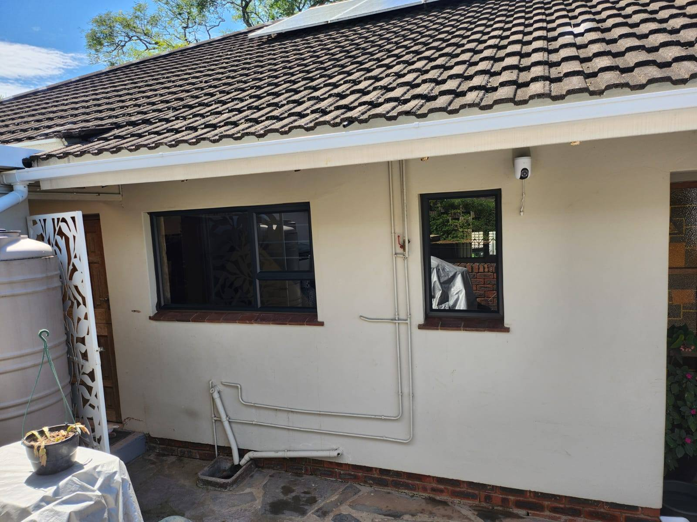
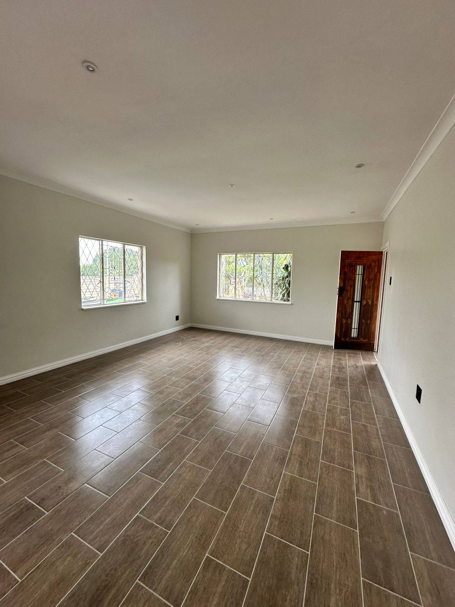
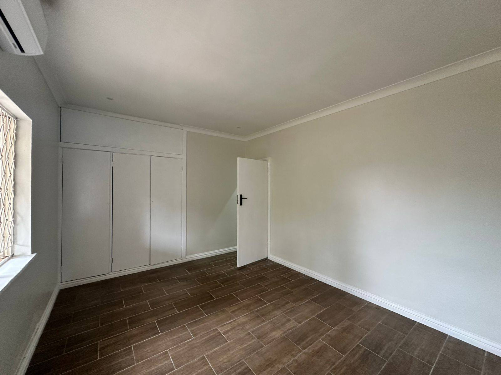
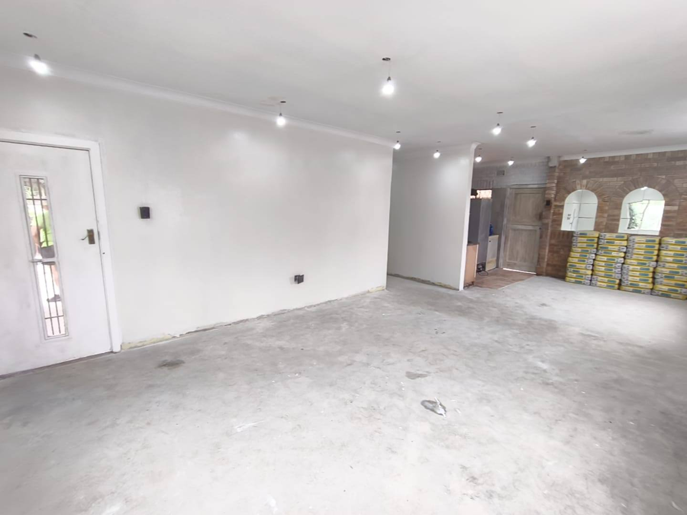
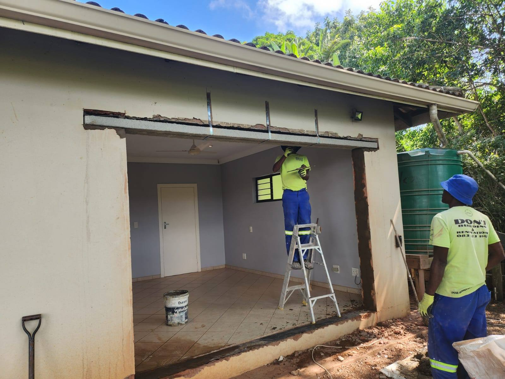

Home/Our Work. Your Inspiration.
Our Work.
Your Inspiration.
A closer look at our paving, building, renovation and installation projects.
Selected work
The difference is in the finish.
Outdoor spaces, renovations and installations from Don's own project collection.







On site with Don's
Real projects. Real progress.
Watch our team work on paving, renovation and finishing projects.
Paving in progress
Renovation and finishing
The finished interior